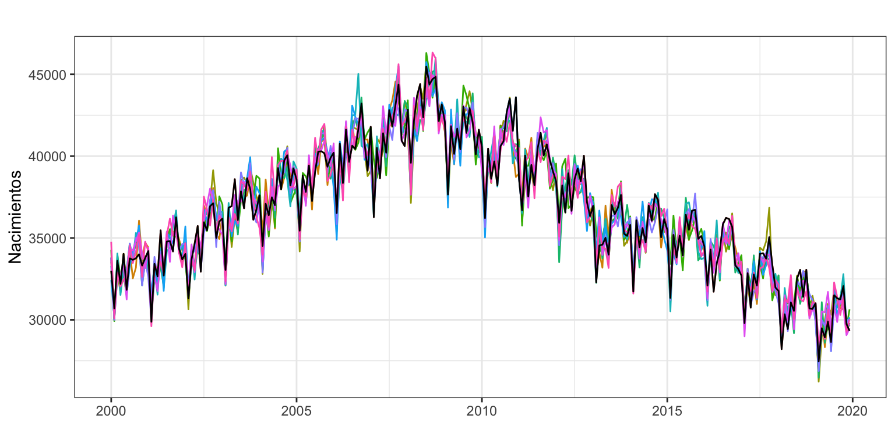
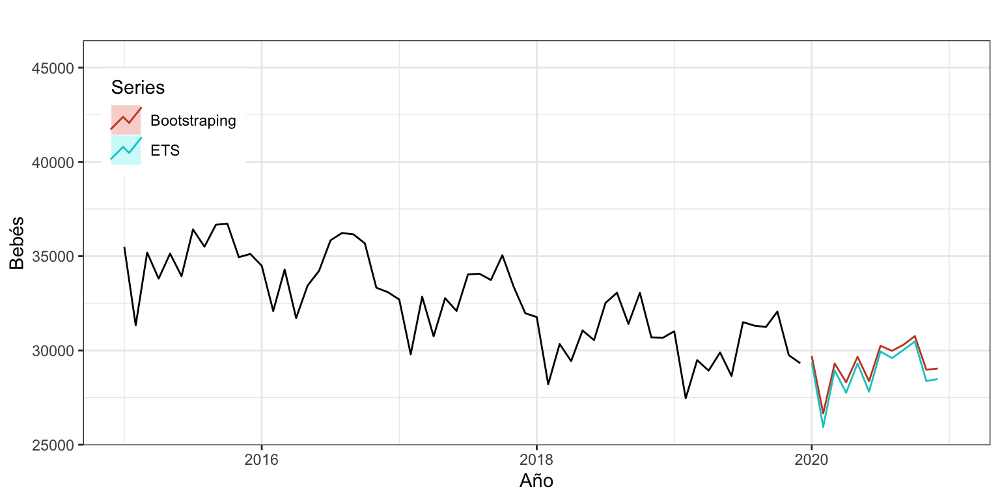
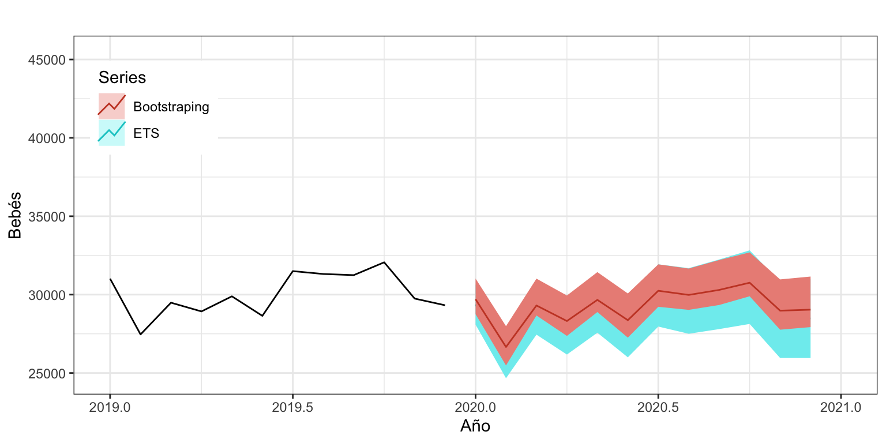

Estacion Serie Tendencia Estacionalidad Error ErrorBootstrapping NuevaSerie
1 1 27.00 19.96 9.60 -2.56 -2.96 26.59
2 2 16.72 25.12 -13.33 4.93 9.43 21.22
3 3 15.08 30.14 -12.09 -2.96 -2.56 15.49
4 4 18.79 34.77 -9.11 -6.87 3.10 28.76
5 5 75.53 38.58 24.94 12.01 12.01 75.53
6 1 63.31 39.24 9.60 14.47 3.10 51.94
7 2 17.28 38.48 -13.33 -7.87 9.43 34.58
8 3 18.00 34.84 -12.09 -4.75 -6.87 15.88
9 4 24.84 30.85 -9.11 3.10 -0.40 21.34
10 5 54.67 30.13 24.94 -0.40 -6.87 48.21
11 1 30.85 31.11 9.60 -9.86 12.01 52.72
12 2 22.02 30.52 -13.33 4.84 -9.86 7.32
13 3 26.51 29.17 -12.09 9.43 3.10 20.18
14 4 24.14 27.94 -9.11 5.31 -7.87 10.96
15 5 41.31 26.54 24.94 -10.17 12.01 63.49Bootstrapping para obtener intervalos de predicción
Máster de Bioestadística (Modelización Estadística)
1 Antecedentes
En el curso hemos aprendido como obtener predicciones puntuales con diferentes métodos: Ingenuo I, Deriva, Ingenuo con estacionalidad, Alisado Exponencial… Por aprendido quiero decir que conocemos la fórmula para calcular la predicción, que sabríamos hacer las predicciones a mano y que en algunas clases de práctica así lo hemos hecho.
También hemos aprendido a obtener intervalos de predicción, aunque nunca hemos visto las fórmulas que hay detrás de estos intervalos. De forma general, si \(\hat y_{T+h|T}\) es la predicción a \(h\) periodos vista, su intervalo de predicción se puede escribir como
\[[\hat y_{T+h|T} - c\cdot \hat \sigma_h,\;\; \hat y_{T+h|T} + c\cdot \hat \sigma_h]\] donde \(c\) depende del nivel de confianza del intervalo de predicción, por ejemplo \(c=1.96\) para un nivel de confianza del 95%; y \(\hat \sigma_h\) es una estimación de la desviación típica del error de predicción \(h\) periodos adelante. Observa que, por su forma de cálculo, estos intervalos siempre son simétricos en torno a la predicción.
Bajo ciertos supuestos sobre la serie temporal y su residuo, se puede obtener matemáticamente la expresión de \(\hat \sigma_h\). Por ejemplo,
Método Ingenuo I: \(\hat \sigma_h = \hat \sigma \sqrt{h}\), donde \(\hat \sigma\) es la desviación típica del error del modelo.
Método Ingenuo con estacionalidad \(\hat \sigma_h = \hat \sigma \sqrt{s +1}\), donde \(s=\lfloor(h-1)/m\rfloor\).
Método de la deriva: \(\hat \sigma_h = \hat \sigma \sqrt{h(1 + h/T)}\).
Alisado simple: \(\hat \sigma_h = \hat \sigma \sqrt{1 + (h-1)\alpha^2}\).
Alisado de Holt: \(\hat \sigma_h = \hat \sigma \sqrt{1 + (h-1)(\alpha^2 + \alpha\beta h + \frac{1}{6}\beta^2 h (2 h -1))}\).
Arima(0, 0, q): \(\hat \sigma_h = \hat \sigma \sqrt{1 + \sum_{i=1}^h \theta_i^2}\), donde \(\theta_i = 0\) para \(i>q\).
Para otros métodos de alisado o ARIMA la fórmula es más compleja.
Entre los supuestos sobre el residuo necesarios para que estas formulas sean correctas están que se distribuya como una normal y que sea incorrelado (¿recuerdas el ACF1 de los indicadores de calidad?). Cuando alguno de estos dos supuestos no se da, el intervalo de confianza de las predicciones obtenido con estas fórmulas es incorrecto y, entonces, bootstrapping es una buena alternativa para obtener el intervalo de confianza de la predicción.
2 Bootstrapping para obtener intervalos de predicción
Lo que viene a continuación no es del todo preciso porque para series temporales se usa algo denominado “block bootstrapping”, pero aquí solo pretendo que tengáis una idea aproximada del procedimiento que se sigue para obtener un intervalo de predicción usando bootstrapping.
2.1 Idea general
Veamos primero la idea general y luego los detalles:
Partimos de una serie temporal \(\{y_t\}_{t=1}^T\) y un horizonte de predicción \(h\).
A partir de la serie original vamos a generar una nueva serie que es similar a la original. Luego veremos como.
Ajustamos nuestro modelo a la nueva serie y obtenemos una predicción \(h\) periodos hacia adelante, que llamaremos \(\hat y_{T+h|T}^1\).
Repetimos el paso 2 y 3 un numero \(n\) de veces (típicamente \(n=5000\)), de forma que al final del proceso tenemos \(n\) predicciones \(h\) periodos hacia adelante obtenidas a apartir de \(n\) series similares a la original: \(\hat y_{T+h|T}^1,\; \hat y_{T+h|T}^2,\; \ldots,\; \hat y_{T+h|T}^n\).
Por último, obtenemos el intervalo de predicción calculando los percentiles correspondientes a partir de estas \(n\) predicciones.
Este proceso hay que repetirlo para cada horizonte de predicción en que estemos interesados.
2.2 Detalles
El paso clave del proceso es el paso 2, donde se obtiene una nueva serie similar a la original. También vale la pena aclarar un poco más el paso 5.
Paso 2: nueva serie
En lo que viene a continuación no voy a ser riguroso para no perdernos en cuestiones matemáticas, pero sí suficientemente preciso para entender bien el proceso.
Dada la serie original, la descomponemos en sus tres componentes: tendencia, estacionalidad y error.
A continuación, obtenemos una versión barajada de la componente del error. (Aquí es donde no estoy siendo preciso porque el proceso de barajado se tiene que hacer por bloques y es con reemplazamiento.)
Ahora se combinan –sumando o multiplicando, según el esquema– la tendencia, la estacionalidad y el error barajado para obtener una nueva serie que se parecerá a la original porque tiene la misma tendencia y estacionalidad.
Veamos un ejemplo muy sencillo, para una serie simulada de orden estacional 5.
La dos primeras columnas indican la estación de cada dato y el valor de la serie, para un total de 15 observaciones.
Las columnas Tendencia, Estacionalidad y Error han sido obtenidas aplicando el método de descomposición por regresiones locales ponderadas. Observa que cada dato de la serie es la suma de estas tres componentes.
La columna ErrorBootstrapping se ha obtenido como un muestreo con reemplazamiento de los datos de la columna Error. Como es una muestra con reemplazamiento, hay algunos errores repetidos.
Por último, la nueva serie (columna NuevaSerie) se ha obtenido sumando las columnas Tendencia, Estacionalidad y ErrorBootstrapping. Esta serie tiene la misma tendencia y estacionalidad que la serie original y solo se diferencia en el error, así que la nueva serie debería parecerse a la serie original.
Paso 5: Predicción por intervalos
Partimos de \(n\) predicciones a \(h\) periodos vista (\(\hat y_{T+h|T}^1,\; \hat y_{T+h|T}^2,\; \ldots,\; \hat y_{T+h|T}^n\)) y queremos obtener a partir de ellas el intervalo de confianza.
Supongamos que el nivel de confianza deseado es del 95%. Entonces, debemos calcular para las predicciones el percentil 2.5% y 97.5%. Recuerda que el percentil 2.5% es el valor numérico que deja un 2.5% de las predicciones por debajo de él; y que el percentil 97.5% es el valor numérico que deja un 97.5% de las predicciones por debajo de él. La función de R quantile() permite obtener estos valores.
Si denominamos \(l_h\) al percentil 2.5% y \(u_h\) al percentil 97.5%, el intervalo de confianza de la predicción a \(h\) periodos vista es \([l_h,\; u_h]\).
¿Y la prediccion puntual?
Para la predicción puntual tenemos dos opciones: obtener la predicción a partir de la serie original (como hemos visto en clase); u obtenerla como media de las \(n\) predicciones obtenidas
\[\frac{1}{n}\sum_{j=1}^n \hat y_{T+h|T}^j\]
Este segundo método es el usual y se denomina bagging de bootstrap aggregating.
3 Ejemplo
Vamos a ver un sencillo ejemplo con la serie de nacimientos desde el año 2000 y hasta el año 2019.
En primer lugar y con propósito meramente ilustrativo, hemos calculado 10 versiones de la serie original de nacimientos obtenidas por bootstraping (paso 2 de la idea general). La Figura 1 muestra la serie original (en negro) y las 10 simulaciones.
bootseries <- bld.mbb.bootstrap(nacimientos, 10) %>%
as.data.frame() %>%
ts(start=2000, frequency=12)
autoplot(nacimientos) +
autolayer(bootseries, colour=TRUE) +
autolayer(nacimientos, colour=FALSE) +
ylab("Bebés") +
xlab("") +
guides(colour="none")
Ahora vamos a ajustar la serie por Alisado Exponencial y obtener las predicciones y sus intervalos a 12 meses vista. Vamos a realizar estos cálculos de dos formas, usando la fórmula teórica –que solo es correcta bajo ciertos supuestos sobre el residuo– y por bootstrapping. Para el segundo caso necesitamos la función de R baggedETS, que por defecto genera 100 nuevas series por bootstrapping.
nacimientosETS <- ets(nacimientos)
etsfc <- forecast(nacimientosETS,
h=12,
level=95)
etsfc Point Forecast Lo 95 Hi 95
Jan 2020 29220.93 27947.01 30494.86
Feb 2020 25797.89 24529.51 27066.28
Mar 2020 28796.81 27311.06 30282.55
Apr 2020 27610.45 26045.43 29175.48
May 2020 29160.49 27434.66 30886.32
Jun 2020 27661.49 25863.50 29459.49
Jul 2020 29792.04 27825.15 31758.92
Aug 2020 29439.48 27365.52 31513.44
Sep 2020 29866.65 27667.42 32065.87
Oct 2020 30324.00 27998.17 32649.83
Nov 2020 28222.61 25828.51 30616.70
Dec 2020 28330.11 25825.06 30835.16nacimientosBagETS<- baggedETS(nacimientos)
baggedetsfc <- forecast(nacimientosBagETS,
h=12,
level=95)
baggedetsfc Point Forecast Lo 100 Hi 100
Jan 2020 29560.64 28636.32 30917.23
Feb 2020 26544.78 25337.42 27873.40
Mar 2020 29170.54 28523.40 30879.06
Apr 2020 28188.87 27302.44 29781.00
May 2020 29521.22 28799.15 31277.46
Jun 2020 28238.07 27232.52 29918.75
Jul 2020 30100.60 29159.95 31723.78
Aug 2020 29834.80 28874.77 31496.45
Sep 2020 30148.91 29186.34 32023.53
Oct 2020 30609.14 29319.27 32499.63
Nov 2020 28845.80 27603.96 30796.82
Dec 2020 28916.78 27903.01 30988.78Observa que ni las predicciones puntuales ni sus intervalos coinciden. Las predicciones son muy parecidas, pero en este caso las obtenidas con bootstrapping son algo superiores a las obtenidas por Alisado (véase Figura 2 a). Además, los intervalos de confianza obtenidos por bootstrapping no son simétricos respecto de la predicción y son más pequeños que los estimados usando las fórmulas clásicas (véase Figura 2 b).


En media, bagging da mejores predicciones que la simple aplicación de ets() a la serie original. Pero como nada es gratis, esta mejora es a costa de un incremento significativo en los tiempos de computación. En concreto, por Alisado los cálculos tardan 0.57 segundos y por bootstrapping tardan 39.99 segundos, ¡y solo hemos pedido 100 simulaciones, no las habituales 5000!